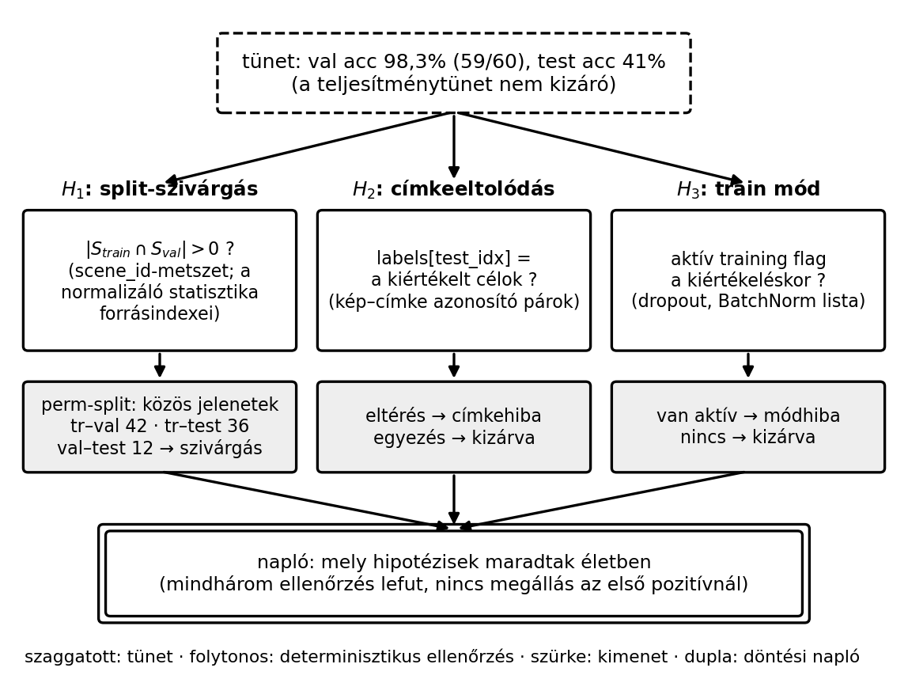

Ez az egység vizsga, nem új tananyag-bevezetés: a korábbi fejezetek eszközeit egyetlen, korábban nem látott hibakötegen kell alkalmazni. Az előfeltétel a 40.1. Összetett levezetési vizsga levezetési vizsga mellett a 39.2. Encoder–decoder vagy lokalizációs fej encoder–decoder és loss-redukciós ismerete, a 36.2. Ismétlések és eredménybizonytalanság seed-ismétlési protokollja és a 28.2. Sziámi és triplet cél triplet-cél marginfeltétele. A vizsgázó nem azt bizonyítja, hogy emlékszik a tanult hibákra, hanem hogy új hibahelyzetben versengő magyarázatokat tud felállítani, és mindegyikhez olyan mérést rendel, amely a többit kizárja.
Induló kérdés: egy GlyphLab-orientációosztályozó (a függelék A. A GlyphLab adatkészlet szakasza szerinti adaton) validációs pontossága 98,3% (59/60 kép), a tiszta teszt pontossága 41%. A hallgató azt mondja: „biztos dropout maradt bekapcsolva”. Miért nem tekinthető ez még diagnózisnak, és milyen szerkezeti ellenőrzések döntik el, hogy a hiba címkeeltolódás, split-szivárgás vagy train/eval módhiba?
Hibadiagnózis (fault diagnosis). Adott egy megfigyelt anomália (például „val acc test acc”) és egy versengő hipotéziscsalád. A hipotézishez tartozik egy predikció valamely megfigyelhető statisztikára nézve. A diagnózis akkor teljes, ha találunk olyan mérést, amelynek eredménye legalább egy hipotézist kizár, és a fennmaradó halmazt a kísérleti naplóban megjelöljük.
Leakage (információszivárgás). A tanítási folyamat
olyan információhoz fér, amely a telepített modell számára a
kiértékeléskor nem lenne elérhető, vagy a split függetlenségi egysége
sérül. A GlyphLab szerződésben a független egység a
scene_id: egy jelenet mindkét nézete ugyanabba a splitbe
tartozik, ezért képenkénti véletlen split leakage. Ugyancsak leakage, ha
a normalizáló statisztikát a teljes 360 képre számoljuk, mert a
teszteloszlás átlaga és szórása beépül a tanított modell bemeneti
transzformációjába.
Label bug (címkehiba). A bemeneti tensor és a
célérték közötti megfeleltetés sérül: eltolás, helytelen sorrend, vagy
olyan geometriai transzformáció, amely a címkét nem őrzi meg. A GlyphLab
corrupted_test.npy sorrendje a metadata teszt-sorrendjével
egyezik; ha a kiértékelés a labels[:60] szeletet használja,
az a teljes címketömb első hatvan eleme, azaz a 0–59. képindex címkéje.
A metadata index mezője rendeli a címkét a képhez, a
split-indexek nincsenek rendezve, ezért ez a szelet nem feltétlenül a
train split; az viszont biztos, hogy csak akkor lenne helyes, ha a
corrupt teszt 60 képe éppen a 0–59. indexű kép lenne, amit a kód nem
ellenőriz és a szerződés nem garantál. A helyes szelet a
teszt-indexekből képzett labels[test_idx].
Train/eval módhiba. Állapotfüggő rétegek — Dropout
és BatchNorm — más számítást végeznek tanításban és kiértékelésben. A
[D12] dokumentáció szerint a BatchNorm statisztikakezelése a két módban
eltérhet; a dropout tanításban véletlen maszkkal skáláz, kiértékelésben
identitásként viselkedik. A hiba akkor áll fenn, ha a validáció vagy
teszt a model.train() állapotban fut.
Wrong reduction (helytelen redukció). A loss
numerikus értéke nem a definiált célfüggvényt valósítja meg, mert a
mean/sum és a nevező nem a szándékolt
megfigyelési egységre vonatkozik. Tipikus példa, amikor a számláló a
teljes batch összege, a nevező viszont egy képre vonatkozó mennyiség: a
veszteség ekkor a batchmérettel skálázódik. A 39.2.
Encoder–decoder vagy lokalizációs fej teljes
pixelre vett BCE-átlaga ezzel szemben nem redukcióhiba, hanem legitim
cél; az előtér nagyobb súlya csak explicit súlyozással érhető el.
Checkpoint hiba. A betöltött állapot nem teljesíti
azt a checkpoint-szerződést, amelyet a felhasználási cél előír; a 12.2. Checkpoint és folytathatóság és a 38.2. Modell, training és best checkpoint két
szerződést különít el. (a) Inference- és kiértékelési
checkpoint: a protokoll által kiválasztott állapot (itt a legkisebb
validációs veszteségű epoch) state_dict-je, azaz a
paraméterek és a perzisztens bufferek, az architektúra és az input séma
azonosítójával. Ehhez optimizer-, scheduler-, GradScaler- és RNG-állapot
nem kell; a hiányuk nem hiba. Checkpoint-hiba itt például: a
kiválasztott helyett az utolsó epoch állapotát töltjük be, más
architektúrába töltünk, vagy strict=False mellett kulcsok,
például a BatchNorm futó statisztikái, csendben elvesznek. (b)
Resume-checkpoint: a tanítás pontos folytatásához a súlyok
mellett az optimizer, a scheduler, AMP esetén a GradScaler és az
RNG-állapotok is kellenek; ezek hiánya csak ennek a szerződésnek a
megsértése.
Hipotézis a vizsgán. Mérhető következményekkel rendelkező magyarázat. A „szerintem dropout” tipp nem hipotézis, amíg nem adjuk meg, milyen megfigyelhető különbséget jósol a versenytársakhoz képest.
A vizsga levezetési követelménye annak pontos megfogalmazása, hogy egyetlen mérés mikor dönt két hipotézis között.
Lemma (elkülönítő ellenőrzés). Legyen két hipotézis, és egy megfigyelhető statisztika. Tegyük fel, hogy az , pedig az tartományt predikálja, ahol . Ha , akkor egyetlen megvalósult mérése legalább az egyik hipotézist kizárja.
Bizonyítás. Ha a mért , akkor a diszjunktság miatt, tehát predikciója hamis; ha , akkor szimmetrikusan hamis; ha , akkor mindkettő hamis. Minden esetben legfeljebb egy hipotézis marad konzisztens a méréssel.
A lemma triviális, de a feltétele nem az: a hallgatónak előre, a
mérés előtt meg kell adnia
és
halmazokat, és ezeknek a hipotézisből szükségszerűen
kell következniük. Két esetet kell elkülöníteni. (1)
Determinisztikus kódhiba-bizonyítás: egy szerkezeti ellenőrzés
kimenete (a splitet átlépő jelenetek száma, a célindex és a képindex
egyezése, az aktív training flagek listája) a kódból és az
adatból egyértelműen következik; itt a lemma szó szerint alkalmazható,
egyetlen futtatás kizár. (2) Statisztikai hipotézisvizsgálat:
egy pontosság vagy rés zajos, bármely hipotézis mellett több értéket
felvehet, ezért a halmazok nem diszjunktak, és a „kizárás” csak döntési
szabály, nem logikai következmény. Ehhez meg kell nevezni a mintavételi
egységet, a nullhipotézist, a hibaszintet és a döntési szabályt, és a
téves elutasítás valószínűsége
()
pozitív. A GlyphLab belső adatszerződése (lab/ADATOK.md)
szerint a teszt 60 kép, de 30 jelenet két-két nézete: ha a modell
kimenete a képtől függ, a két nézet eredménye korrelált lehet, ezért 60
független Bernoulli-próbával nem számolhatunk igazolás nélkül.
Konzervatív választás jelenetenként egy nézet:
.
Ha
szerint a modell a címkétől függetlenül, egyenletesen tippel, akkor a
helyes találatok száma
;
szinten a döntési szabály
„
elutasítva, ha
”,
mert
és
(SciPy binom.sf). Ez az 5.2. Várható
érték, variancia és likelihood binomiális modelljére épül; a
farokvalószínűség az ismételt mintavételi eljárásra vonatkozó,
feltételes állítás.
Alkalmazzuk a lemmát a nyitó anomáliára. Három versengő hipotézis:
| Hipotézis | Lehetséges teljesítménytünet (nem szükségszerű) | Közvetlen szerkezeti ellenőrzés |
|---|---|---|
| : split-szivárgás | magas val acc, val test; a mérték a nézetek hasonlóságától függ | a tényleges train/val/test indexek scene_id-metszete; a
normalizáló statisztika forrásindexei |
| : címkeeltolódás a kiértékelésben | alacsony test acc, permutált átló a konfúziós mátrixban | a kiértékelt célok indexe azonos-e a predikált képek indexével (kép–címke azonosító párok) |
| : dropout/BatchNorm train módban a kiértékeléskor | ismételt val-kiértékelés ingadozása | a kiértékelés pillanatában aktív training flagek
listája; a véletlen- és statisztikarétegek listája |
A tünetoszlop nem kizáró: a jósolt tartományok nem diszjunktak és nem szükségszerűek. Szivárgás mellett is lehet kicsi a val–test rés (ha a nézetek kevéssé hasonlók), címkehibánál is lehet nagy, és több hiba egyszerre is fennállhat. Ezért a lemmát a harmadik oszlop determinisztikus ellenőrzéseire alkalmazzuk, és mindhármat lefuttatjuk, nem állunk meg az első pozitívnál. Az alábbi kontroll két különböző hibát mutat, amelyek ugyanazt a feltett mintázatot (magas val acc, alacsony clean test acc) adhatják, és a közvetlen ellenőrzések szétválasztják őket; a második rész azt mutatja, hogy a dropout kimenet-különbsége train módban is lehet nulla. A nyitó kérdésre a válasz tehát: nem a pontosság vagy a veszteség dönt, hanem a három közvetlen, determinisztikus ellenőrzés együttese, mert a teljesítménytünetek nem különítik el a hipotéziseket.

import numpy as np
import torch
# Két különböző hiba, azonos feltett teljesítménymintázattal (val acc magas, clean test acc alacsony).
scene = np.repeat(np.arange(6), 2) # 12 kép: 6 jelenet × 2 nézet
split_a = np.array(["train", "val", "train", "train", "val", "test",
"test", "test", "train", "train", "val", "val"]) # A: képenkénti split
split_b = np.repeat(["train", "train", "train", "val", "test", "test"], 2) # B: jelenetszintű split
eval_idx_a = np.flatnonzero(split_a == "test") # A: a célok indexe helyes
eval_idx_b = np.arange((split_b == "test").sum()) # B: labels[:n_test], a tömb eleje
def leaking_scenes(split):
return [int(s) for s in np.unique(scene) if len(set(split[scene == s])) > 1]
def targets_match_images(split, eval_idx):
return bool(np.array_equal(eval_idx, np.flatnonzero(split == "test")))
for name, split, idx in (("A", split_a, eval_idx_a), ("B", split_b, eval_idx_b)):
print(f"{name}: splitet átlépő jelenetek = {leaking_scenes(split)}, "
f"célindex = képindex: {targets_match_images(split, idx)}")
# A dropout kimenet-különbsége tünet, nem bizonyíték: train módban is lehet 0.
drop = torch.nn.Dropout(p=0.5).train()
zeros, ones = torch.zeros(4, 8), torch.ones(4, 8)
print("nulla aktiváció, két hívás:", (drop(zeros) - drop(zeros)).abs().max().item())
torch.manual_seed(1); first = drop(ones)
torch.manual_seed(1); second = drop(ones)
print("azonos seed, két hívás:", (first - second).abs().max().item())
print("aktív training flag:", [type(m).__name__ for m in drop.modules() if m.training])Kimenet a rögzített környezetben (Python 3.12.3, NumPy 2.5.4, PyTorch 2.15.0+cpu, CPU, 1 szál):
A: splitet átlépő jelenetek = [0, 2], célindex = képindex: True
B: splitet átlépő jelenetek = [], célindex = képindex: False
nulla aktiváció, két hívás: 0.0
azonos seed, két hívás: 0.0
aktív training flag: ['Dropout']Az A esetben szivárgás van, a célindex helyes; a B esetben a split
hibátlan, a célok viszont nem a kiértékelt képekhez tartoznak. A
teljesítménymintázat a kettőt nem különbözteti meg, a két szerkezeti
ellenőrzés igen. A dropout esetében a nulla kimenet-különbség nem zárja
ki a train módot; a training flag közvetlenül mutatja.
A labor öt GlyphLab-kontextusú, szándékosan hibás kódrészletet ad.
Mindegyiknél közöljük a hiba okát, következményét, az elkülönítő mérést
és a javítást. A részletek munkakönyvtára a lab/ könyvtár;
a data/... útvonalak innen értendők. Az 1., 4. és 5. pont
ellenőrzése önállóan futtatható, és az ott közölt kimenet mért; a 2. és
3. pont kódrészlete koncepcionális diagnózis, amelyet a szöveg magyaráz,
nem önálló program.
# HIBÁS
images = np.load("data/images.npy").astype(np.float32)
labels = np.load("data/labels.npy")
mean = images.mean() # a teszt statisztikája is benne van
std = images.std()
X = (images - mean) / std
perm = np.random.default_rng(1).permutation(len(X))
idx_tr, idx_va, idx_te = perm[:240], perm[240:300], perm[300:]Ok. A normalizálás a teljes adatra számol átlagot és
szórást; a split képenként véletlen, így egy scene_id két
nézete különböző splitbe kerülhet.
Következmény. A modell a teszteloszlás skáláját ismeri, és a validáció egy része a train-nézetek párja. Lehetséges tünet a felfelé torzított val acc; a torzítás mértéke a nézetek hasonlóságától függ, ezért a tünet önmagában nem bizonyít.
Elkülönítő mérés. Nem a metadata split
oszlopát kell vizsgálni, hanem a ténylegesen használt indexhalmazokat és
a belőlük épített loadereket: hány scene_id fordul elő
egynél több loaderben. Ha ez a szám pozitív, a leakage igazolt. A
javítás ezért a metadata index mezőjéből újraképzi
mindhárom indexhalmazt, ezekből újraépíti a loadereket, a régi
perm-alapú indexeket és loadereket nem használja tovább, a
normalizáló statisztikát az új train indexekből számolja, és az
ellenőrzést a loaderek által ténylegesen visszaadott képindexeken
futtatja; a kontroll a hibás split loadereit ugyanezzel a függvénnyel
elkapja.
# JAVÍTOTT
import numpy as np
import pandas as pd
import torch
from torch.utils.data import DataLoader, TensorDataset
images = np.load("data/images.npy").astype(np.float32)
labels = np.load("data/labels.npy")
meta = pd.read_csv("data/metadata.csv").sort_values("index").reset_index(drop=True)
assert meta["index"].tolist() == list(range(len(images))) # az index köti a sort a képhez
idx_tr, idx_va, idx_te = (meta.loc[meta["split"] == s, "index"].to_numpy()
for s in ("train", "val", "test")) # a perm-alapú indexek helyett
mean = images[idx_tr].mean() # csak a train képekből
std = images[idx_tr].std()
X = (images - mean) / std
def make_loader(idx, shuffle): # a loader a képindexet is visszaadja
ds = TensorDataset(torch.from_numpy(X[idx]), torch.from_numpy(labels[idx]),
torch.tensor(idx))
return DataLoader(ds, batch_size=32, shuffle=shuffle)
def loader_indices(loader):
return np.concatenate([batch[2].numpy() for batch in loader])
def scene_overlap(*loaders): # a ténylegesen betöltött képek jelenetei
scenes = [set(meta["scene_id"].to_numpy()[loader_indices(dl)]) for dl in loaders]
return {(a, b): len(scenes[a] & scenes[b])
for a in range(len(scenes)) for b in range(a + 1, len(scenes))}
train_loader, val_loader, test_loader = (make_loader(idx_tr, True), make_loader(idx_va, False),
make_loader(idx_te, False))
assert not any(scene_overlap(train_loader, val_loader, test_loader).values())
# kontroll: a hibás, perm-alapú split loadereit ugyanez az ellenőrzés elkapja
perm = np.random.default_rng(1).permutation(len(X)) # a hibás blokk indexei
bad = [make_loader(i, False) for i in (perm[:240], perm[240:300], perm[300:])]
print("perm-split metszetek:", scene_overlap(*bad))Futási jegyzőkönyv (Python 3.12.3, NumPy 2.5.4, pandas 3.1.0, PyTorch
2.15.0+cpu, CPU, 1 szál):
perm-split metszetek: {(0, 1): 42, (0, 2): 36, (1, 2): 12},
azaz a perm-alapú split train–val, train–test és val–test párjai rendre
42, 36 és 12 jelenetben fednek át; a javított loaderekre mindhárom
metszet üres.
# HIBÁS
corr = torch.from_numpy(np.load("data/corrupted_test.npy"))
model.eval()
with torch.no_grad():
logits = model(corr)
pred = logits.argmax(1)
y_eval = torch.from_numpy(labels[:60]) # a teljes tömb első 60 eleme, nem a teszt
acc = (pred == y_eval).float().mean().item()Ok. A labels[:60] a teljes tömb első
hatvan eleme, azaz a 0–59. képindex címkéje. A metadata
index mezője rendeli a címkét a képhez, a split-indexek
nincsenek rendezve, ezért ez a szelet nem feltétlenül a train split; a
szállított adatban például a 0–59. kép 36 train, 16 val és 8 test képből
áll. A corrupt teszt sorrendje a metadata teszt-sorrendjével egyezik,
tehát a predikcióhoz nem tartozó célokat hasonlítunk.
Következmény. A mért pontosság érvénytelen, mert a
predikciókat nem a hozzájuk tartozó célokkal hasonlítja; meghatározott
chance-szintje nincs. A
várható érték csak akkor adódik, ha a tévesen párosított címkék a
predikcióktól függetlenek és a három osztályon egyenletesek.
Kiegyensúlyozott osztályok mellett is lehet a mért érték
vagy
:
ha a predikciók [0, 1, 2] és a tévesen használt címkeszelet
[0, 1, 2], a pontosság
;
ha a téves szelet [1, 2, 0] (ugyanannak a címkesorrendnek a
ciklikus permutációja), akkor
.
A rossz szelet tehát véletlenül is adhat tökéletesnek látszó értéket,
ezért a pontosság önmagában nem azonosítja a címkehibát.
Elkülönítő mérés. Közvetlen ellenőrzés: a kiértékelt
célok indexe megegyezik-e a predikált képek indexével. A
labels[:60] a 0–59. képindex címkéje, a corrupt teszt képei
viszont a metadata split == 'test' sorainak felelnek meg;
ha a két indexlista eltér, a címkehiba igazolt, a pontosságtól
függetlenül. A helyes címkékkel újraszámolt pontosság csak kiegészítő
tünet.
# JAVÍTOTT
test_idx = meta.loc[meta["split"] == "test", "index"].to_numpy() # a metadata index-oszlopa
y_eval = torch.from_numpy(labels[test_idx])
acc = (pred == y_eval).float().mean().item()# HIBÁS
def evaluate(model, loader): # ennek a változatnak a törzse nem kapcsol eval módba
correct = n = 0
with torch.no_grad():
for xb, yb in loader:
correct += (model(xb).argmax(1) == yb).sum().item()
n += len(yb)
return correct / n
for epoch in range(epochs):
model.train()
for xb, yb in train_loader:
...
val_acc = evaluate(model, val_loader) # sehol sem hívódik model.eval()A labor 3. kódrészletében a hiba nem a külső hívássorban van: a hívás
helyes, de az evaluate törzse nem hív
model.eval()-t. Ha az evaluate belsejében
szerepelne a model.eval() (a 12.1.
Tanítás, validáció és kiértékelési mód szerinti javított változat),
ugyanez a külső hívás helyes eredményt adna; itt viszont a dropout aktív
marad.
Ok. A model.eval() hívás elmarad a
validáció előtt, így a dropout véletlen maszkja továbbra is aktív, a
BatchNorm pedig a batch-statisztikát használja.
Következmény. A validációs veszteség
batch-összetételtől függően ingadozik, a legjobb checkpoint kiválasztása
zajossá válik. A teszt, ha ott már helyesen eval módban
fut, jobbnak tűnhet a validációnál, ami inverz anomália.
Elkülönítő mérés. Közvetlen ellenőrzés: az
evaluate belsejében, a forward előtt, a
[n for n, m in model.named_modules() if m.training] lista
üres-e. Ha nem üres, a módhiba igazolt. Ugyanazon a val batch-en két
egymás utáni kiértékelés logit-különbsége csak tünet: pozitív érték
train módot jelez, a nulla viszont nem zárja ki (nulla aktiváció a
dropout előtt, azonos seed és így azonos maszk, vagy olyan modell,
amelyben nincs véletlenréteg).
# JAVÍTOTT
model.eval()
for xb, yb in val_loader:
with torch.no_grad():
logits = model(xb)
...
# a következő epoch előtt vissza kell kapcsolni
model.train()A 39.2. Encoder–decoder vagy lokalizációs fej
szegmentáló fejének célfüggvénye az összes pixelre átlagolt bináris log
loss (BCEWithLogitsLoss(), mean redukció). Ez
legitim, széles körben használt cél; az előtér ritkasága önmagában nem
implementációs hiba, hanem célválasztási és metrikaértelmezési kérdés,
amelyet a validációs Dice/IoU mellett kell megítélni. Ha az előteret
szándékosan nagyobb súllyal akarjuk tanítani, ezt explicit
súlyozott célként kell definiálni. Képenként normalizálva, majd
a képekre átlagolva:
ahol
a pixelenkénti BCE-tag,
.
A
eset a szokásos pixelátlag (azonos képméret mellett). A nevező képenként
legalább
,
tehát üres célmaszkra is értelmezett, és ilyenkor a háttértagok
büntetnek: egy téves előtérpredikció üres GT- (ground truth,
referencia-) maszk mellett is nagy veszteséget kap. A két helyes
redukciót külön kell tartani: (a) teljes pixelátlag esetén
F.binary_cross_entropy_with_logits(logits, masks, reduction="mean"),
azaz a teljes batch összes pixelére vett BCE-összeg osztva a pixelek
számával; (b) képenként normalizált változat esetén a fenti képlet
szerint előbb képenként osztunk a képenkénti súlyösszeggel, majd a
képekre átlagolunk. A számláló és a nevező mindig ugyanarra az egységre
(pixel vagy kép) vonatkozik; a kettő keverése a következő hibás
változat.
A hibás változat egy „javításnak” szánt redukció:
# HIBÁS
logits_flat = logits.view(N, -1) # (N, H*W)
target_flat = masks.view(N, -1) # (N, H*W)
loss = F.binary_cross_entropy_with_logits(
logits_flat, target_flat, reduction="sum")
loss = loss / target_flat.sum(dim=1).clamp(min=1).mean()Ok. A számláló a teljes batch
összege, a nevező az egy képre jutó átlagos előtérszám.
A batch megduplázása így megduplázza a veszteséget és a gradienst: a
hatásos tanulási ráta a batchmérettől függ. A közös nevező ráadásul az
előtér és a háttér relatív súlyát sem változtatja meg, mert mindkettő
ugyanazt a szorzót kapja. A clamp(min=1) csak a nullával
osztást akadályozza meg; a számlálót nem nullázza, üres maszkra a
háttértagok továbbra is benne vannak (négy
logit és üres cél mellett a számláló
).
Következmény. A batchméret vagy a gradiens-akkumuláció változtatása más optimalizálási lépést ad ugyanarra az adatra; a kísérletek nem összehasonlíthatók, és az előtér súlyozása, amelyet a kód sugall, valójában nem történik meg.
Elkülönítő mérés és javítás. A következő float64-es ellenőrzés a hibás redukciót és a fenti képenként normalizált célt veti össze: batch-duplikálás, a eset egyezése a szokásos pixelátlaggal, az előtér/háttér gradiensarány és az üres maszk.
import math
import torch
import torch.nn.functional as F
def wrong_reduction(logits, masks):
# a fenti HIBÁS redukció függvényként: a számláló a teljes batch összege, a nevező egy képre jutó előtérszám-átlag
n = logits.shape[0]
loss = F.binary_cross_entropy_with_logits(
logits.reshape(n, -1), masks.reshape(n, -1), reduction="sum")
return loss / masks.reshape(n, -1).sum(dim=1).clamp(min=1).mean()
def weighted_bce_per_image(logits, masks, w_fg=1.0):
"""Képenként normalizált, explicit előtérsúlyos BCE; w_fg=1 a szokásos pixelátlag."""
per_pixel = F.binary_cross_entropy_with_logits(logits, masks, reduction="none")
w = torch.where(masks > 0.5, torch.full_like(masks, w_fg), torch.ones_like(masks))
per_image = (w * per_pixel).flatten(1).sum(1) / w.flatten(1).sum(1)
return per_image.mean()
torch.manual_seed(20261020)
dt = torch.float64
masks = torch.zeros(3, 1, 8, 8, dtype=dt)
masks[0, 0, 2:6, 3] = 1 # vékony előtér
masks[1, 0, 4, 1:7] = 1 # üres a 2-es kép marad
logits = torch.randn(3, 1, 8, 8, dtype=dt)
def grads(fn, lg, mk, **kw):
lg = lg.clone().requires_grad_(True)
loss = fn(lg, mk, **kw)
loss.backward()
return loss.item(), lg.grad
# 1) Batch-duplikálás: az átlagolt loss és a logitgradiens maradjon változatlan.
# A két másolat logitjai ugyanattól a paramétertől függnek, ezért a közös
# paraméterre a láncszabály szerint a két másolat logit-gradiensének összege hat.
for name, fn in (("hibás", wrong_reduction), ("javított", weighted_bce_per_image)):
l1, g1 = grads(fn, logits, masks)
l2, g2 = grads(fn, torch.cat([logits, logits]), torch.cat([masks, masks]))
scale = ((g2[:3] + g2[3:]) / g1).mean().item()
print(f"{name:9s} loss {l1:.6f} -> duplikálva {l2:.6f}; logitgradiens-szorzó {scale:.3f}")
# 2) w_fg=1 a szokásos pixelátlag
assert math.isclose(weighted_bce_per_image(logits, masks).item(),
F.binary_cross_entropy_with_logits(logits, masks).item(), rel_tol=1e-12)
# 3) Előtér/háttér gradiensarány: a hibás nevező nem változtatja, a w_fg igen.
def fg_bg_ratio(fn, **kw):
_, g = grads(fn, logits, masks, **kw)
fg = masks > 0.5
return (g[fg].abs().mean() / g[~fg].abs().mean()).item()
print("előtér/háttér |grad|-arány: pixelátlag %.3f, hibás %.3f, w_fg=10 %.3f" % (
fg_bg_ratio(weighted_bce_per_image), fg_bg_ratio(wrong_reduction),
fg_bg_ratio(weighted_bce_per_image, w_fg=10.0)))
# 4) Üres célmaszk: a háttértagok is büntetnek.
empty = torch.zeros(1, 1, 2, 2, dtype=dt)
z0 = torch.zeros_like(empty)
print("üres maszk, z=0: %.6f (log 2 = %.6f), z=+5: %.6f" % (
weighted_bce_per_image(z0, empty).item(), math.log(2),
weighted_bce_per_image(z0 + 5.0, empty).item()))
print("lektori kontroll, hibás redukció: négy z=0 üres -> %.9f, duplikálva %.9f" % (
wrong_reduction(z0, empty).item(), wrong_reduction(torch.cat([z0, z0]), torch.cat([empty, empty])).item()))Futási jegyzőkönyv (Python 3.12.3, PyTorch 2.15.0+cpu, float64, CPU, 1 szál, seed 20261020):
hibás loss 40.106559 -> duplikálva 80.213117; logitgradiens-szorzó 2.000
javított loss 0.765924 -> duplikálva 0.765924; logitgradiens-szorzó 1.000
előtér/háttér |grad|-arány: pixelátlag 0.690, hibás 0.690, w_fg=10 5.426
üres maszk, z=0: 0.693147 (log 2 = 0.693147), z=+5: 5.006715
lektori kontroll, hibás redukció: négy z=0 üres -> 2.772588722, duplikálva 5.545177444A hibás redukció a duplikált batchen kétszeres veszteséget és kétszeres logitgradienst ad; a közös paraméterre a láncszabály szerint a paramétergradiens is ugyanígy skálázódik, a képenként normalizált cél viszont mindkettőt változatlanul hagyja. Az előtér/háttér gradiensarány a hibás változatban pontosan a pixelátlagé (), tehát a „javítás” nem súlyoz; a valódi előtérsúlyozás () az arányt -ra emeli. Ez nem pontosan tízszeres növekedés, mert a képenkénti nevező is változik: a nagyobb előtérszámú képeknél a nevező jobban megnő, ezért a gradienst erősebben tompítja, és az üres maszkú kép háttere, amelynek nevezője változatlan, nagyobb súlyt kap az aggregált arányban. Üres célmaszkra mellett a veszteség , a téves előtérpredikció () pedig nagyobb büntetést kap ().
# HIBÁS
for epoch in range(epochs):
train_one_epoch(...)
val_loss = evaluate(...)
torch.save({"model": model.state_dict(), "epoch": epoch}, "last.pt")
state = torch.load("last.pt")
model.load_state_dict(state["model"])
test_acc = evaluate(model, test_loader) # az utolsó, túlillesztett modellOk. A kiértékelés nem a legjobb validációs veszteségű epoch modelljét tölti be, hanem az utolsót; a túlillesztés után az utolsó epoch gyakran rosszabb.
Következmény. A riportált eredmény nem a protokoll szerint kiválasztott modellhez tartozik. Az utolsó epoch a teszten lehet rosszabb, azonos, sőt jobb is a kiválasztottnál; a hiba a választási protokoll megsértése, nem a pontosság iránya.
Elkülönítő mérés. A három split szerepe különüljön
el: a trainen tanítunk, a validáció a modellválasztásé (ezért a
validációs adat nem része a tanításnak), a teszt pedig kizárólag a
kiválasztás utáni egyszeri kiértékelésé. A diagnózis nem használja a
tesztet: a teszt a kiválasztás után egyszer fut, és nem vehet részt a
modellválasztás ellenőrzésében. A betöltött checkpoint útvonalát,
SHA-256 hash-ét, epoch és mentett val_loss
mezőjét a tanítási napló előre rögzített argminjával vetjük össze, a
betöltés helyességét pedig a validációs kontrollon: a betöltött modellel
újraszámolt val loss egyezik-e a checkpointban mentett értékkel. A rossz
epoch így akkor is kiderül, ha a két modell pontossága azonos.
import hashlib
import torch
def sha256(path):
with open(path, "rb") as f:
return hashlib.sha256(f.read()).hexdigest()
def check_checkpoint(path, log, model, val_loss_fn, tol=1e-6):
"""Teszt nélküli diagnózis: a betöltött állapot a napló előre rögzített argminja-e."""
best = min(log, key=lambda r: r["val_loss"]) # szabály: legkisebb val_loss epoch
state = torch.load(path, map_location="cpu")
model.load_state_dict(state["model"])
model.eval()
report = {"path": str(path), "sha256": sha256(path), "epoch": state["epoch"],
"argmin_epoch": best["epoch"], "saved_val_loss": state.get("val_loss"),
"recomputed_val_loss": val_loss_fn(model)}
report["selection_ok"] = state["epoch"] == best["epoch"]
report["load_ok"] = (state.get("val_loss") is not None
and abs(report["recomputed_val_loss"] - state["val_loss"]) <= tol)
return report
# kontroll: azonos súlyok (tehát azonos accuracy), de rossz epoch -> a diagnózis jelez
torch.manual_seed(0)
model = torch.nn.Linear(4, 3)
xv, yv = torch.randn(16, 4), torch.randint(0, 3, (16,))
val_loss_fn = lambda m: torch.nn.functional.cross_entropy(m(xv), yv).item()
v2 = val_loss_fn(model) # az utolsó (2.) epoch valódi val_loss-a
log = [{"epoch": 0, "val_loss": v2 + 0.2}, {"epoch": 1, "val_loss": v2 - 0.1}, {"epoch": 2, "val_loss": v2}]
torch.save({"model": model.state_dict(), "epoch": 2, "val_loss": v2}, "last.pt")
torch.save({"model": model.state_dict(), "epoch": 1, "val_loss": v2 - 0.1}, "best.pt") # hibás mentés: 1. epoch címke, 2. epoch súlyai
for path in ("last.pt", "best.pt"):
r = check_checkpoint(path, log, model, val_loss_fn)
print(path, {k: r[k] for k in ("epoch", "argmin_epoch", "selection_ok", "load_ok")})Kimenet a rögzített környezetben (Python 3.12.3, PyTorch 2.15.0+cpu, CPU, 1 szál, seed 0):
last.pt {'epoch': 2, 'argmin_epoch': 1, 'selection_ok': False, 'load_ok': True}
best.pt {'epoch': 1, 'argmin_epoch': 1, 'selection_ok': True, 'load_ok': False}A last.pt hibátlanul betöltődik, de nem az argmin epoch;
a hibásan mentett best.pt epoch-mezője helyes, a súlyai
viszont nem az 1. epochéi, ezért az újraszámolt val loss eltér a
mentettől. A fenti kimenet a kontrollfutás mért eredménye; a diagnózis
nem igényel teszt spliten végzett kiértékelést.
# JAVÍTOTT
# A validációs split a tanítástól elkülönített; a teszt csak a kiválasztás után, egyszer fut.
best_val = float("inf")
for epoch in range(epochs):
train_one_epoch(...)
val_loss = evaluate(...)
if val_loss < best_val:
best_val = val_loss
torch.save({"model": model.state_dict(), "epoch": epoch,
"val_loss": val_loss}, "best.pt")
state = torch.load("best.pt")
model.load_state_dict(state["model"])
model.eval()Legyen a teszt hat képe, . A címkeeltolódási hipotézis hibás céljai , azaz ciklikus eltolás. A példa kedvéért tegyük fel, hogy a megfigyelt tesztpredikció ; ez a megfigyelt adat, nem a következménye, és abból, hogy egy modell a trainen tökéletes, a teszten való tökéletesség nem következik.
import numpy as np
y = np.array([0, 1, 2, 0, 1, 2])
y_hat = y.copy()
y_bug = (y + 1) % 3
acc_true = (y_hat == y).mean() # 1.000
acc_bug = (y_hat == y_bug).mean() # 0.000A lemma nyelvén . A megfigyelt minta , ezért mellett determinisztikusan adódik, azaz . A nullhipotézis nem a megfigyelt -ról szól, hanem a predikció eloszlásáról: eszerint a modell képenként, a címkétől függetlenül, egyenletesen tippel. Ekkor valószínűsége , és ezen az eseményen determinisztikus, mert ; ezért . A tartója tehát tartalmazza a megfigyelt pontot, ezért a lemma diszjunktsági feltétele nem teljesül: a kimenet nem logikai kizárás. A mérés a hat képből álló minta értéke; a példában ez , de a szabály bármely megfigyelt értékre alkalmazható. Döntési szabály: szinten -t elutasítjuk, ha mind a hat predikció helyes; a téves elutasítás valószínűsége . Ez döntés, nem logikai kizárás. A 60 képes teszt standard hibája ide nem vihető át, mert a mintaméret itt 6. Egy másik mintán, ahol a mért , a (amely esetén determinisztikusan -t jósol) nem egyeztethető össze a méréssel; ez azonban már másik megfigyelés.
F1 (fogalmi, nehézség 1). Definiálja a leakage
fogalmát a GlyphLab szerződésben. Adjon egy olyan példát, ahol a
képenkénti véletlen split nem okoz mérhető validációs torzítást, és egy
olyat, ahol igen. Beadandó: legfeljebb fél oldalas magyarázat,
a scene_id szerepének megjelölésével.
F2 (levezetési, nehézség 2). Rögzített tesztpredikció mellett szerint a kiértékelés célja ciklikusan eltolódott (), szerint a modell a címkétől függetlenül, egyenletesen tippel. A fenti hat elemű mintán (a) mutassa meg, hogy az statisztikára determinisztikus predikciót ad, tartója viszont tartalmazza ezt az értéket, tehát a lemma diszjunktsági feltétele nem teljesül; (b) adjon szintű döntési szabályt ellen, és számítsa ki a téves elutasítás valószínűségét; (c) nevezze meg, mi a mintavételi egység a 60 képes GlyphLab-teszten, és miért. Beadandó: a predikciók, a döntési szabály, a hibavalószínűség és a mintavételi egység indoklása.
F3 (implementációs, nehézség 2). Írjon olyan
Python-függvényt, amelynek neve
scene_split_check(metadata_csv), és amely a GlyphLab
metadata.csv-ből (fájlútvonal vagy betöltött
DataFrame) ellenőrzi, hogy minden scene_id
összes nézete azonos splitben van. A függvény először ellenőrizze a
kötelező oszlopok (index, scene_id,
view_id, split) meglétét, majd adja vissza a
sértő scene_id-k listáját. Beadandó: futtatható
függvény, egy fejléces, de nulla soros bemenetre és egy mesterségesen
megsértett bemenetre adott kimenettel; a 0 bájtos fájlra adjon
egyértelmű hibát.
F4 (hibakeresési, nehézség 2). A labor 2.
kódrészlete a corrupt tesztet labels[:60]-nal értékeli.
Lokalizálja a hibát, írja le a következményét a várható pontosságra, és
mutassa meg a javítást három elemű ellenőrző példán, ahol a helyes
címkék [0,2,1], a hibásak [1,0,0], a
predikciók [0,2,1]. Beadandó: ok, következmény,
javított kód, a három elemű kontroll értéke.
F5 (kísérleti/transzfer, nehézség 3). Tervezzen kísérletet annak eldöntésére, hogy a 98,3% (59/60 kép)-os validációs pontosság split-szivárgásból vagy a val jelenetek könnyű összetételéből adódik. Adja meg a protokollt, a megfigyelési egységet, a metrikát és a következtetési korlátot. Beadandó: egy bekezdésnyi protokoll, amely nem használja a teszt-adatot a döntéshez.
F1 megoldás. (a) Nem okoz torzítást: ha
minden kép külön jelenethez tartozna (egy kép = egy jelenet), a
képenkénti véletlen split megegyezne a jelenetszintű felosztással, ezért
a validációs kép független lenne a train képektől. (b) Okoz
torzítást: a GlyphLabban egy jelenethez két nézet tartozik, és a
generátor egyetlen maszkot sorsol, amelyre mindkét nézetet külön
Gauss-zajjal rajzolja (A. A GlyphLab
adatkészlet, lab/generate_data.py); a képenkénti split
így ugyanannak a jelenetnek a két nézetét teheti külön splitbe, a két
nézet geometriai tartalma azonos, ezért a validációs kép nem független a
train képtől, és a pontosság felfelé torzított. A scene_id
a mintavételi egység, ezért a
groupby("scene_id")["split"].nunique() értéke: ha bármely
jelenetre 2, a hiba fennáll. (c) További leakage-forma: a
normalizáló statisztika a teljes adatra számolva a teszteloszlás átlagát
és szórását viszi a modellbe; ez akkor is torzít, ha a split egyébként
helyes.
F2 megoldás. (a) és miatt mellett , , azaz . mellett a hat találat független Bernoulli, így bármely értéket felveheti mellett, a -t is valószínűséggel. A tartók nem diszjunktak, ezért egyetlen mérés nem logikai kizárás. (b) Döntési szabály: elutasítva, ha . A téves elutasítás valószínűsége ; a mellett a szabály mindig elutasít. A csak a független, egyenletes tippelés nullhipotézise mellett érvényes. (c) A 60 képes teszten a mintavételi egység a jelenet (30 jelenet, két nézet), mert a képtől függő kimenet mellett a két nézet találata korrelált lehet. Konzervatív eljárás jelenetenként egy nézet: , és mellett az elutasítási tartomány (). A 60 képre számolt standard hiba csak független képek esetén lenne érvényes.
F3 megoldás.
# munkakönyvtár: lab/
import pandas as pd
REQUIRED = ["index", "scene_id", "view_id", "split"]
def scene_split_check(metadata_csv):
if isinstance(metadata_csv, pd.DataFrame):
meta = metadata_csv.copy() # a hívó DataFrame-jét nem módosítjuk
else:
try:
meta = pd.read_csv(metadata_csv)
except pd.errors.EmptyDataError as exc:
raise ValueError("üres metadata.csv: nincs fejléc") from exc
missing = [c for c in REQUIRED if c not in meta.columns]
if missing:
raise ValueError(f"hiányzó oszlopok: {missing}")
bad = meta.groupby("scene_id")["split"].nunique() > 1
return bad[bad].index.tolist()
empty = pd.DataFrame(columns=REQUIRED) # fejléc, nulla adatsor
tidy = pd.DataFrame({"index": [0, 1, 2, 3], "scene_id": ["s0", "s0", "s1", "s1"],
"view_id": [0, 1, 0, 1], "split": ["train", "train", "val", "val"]})
broken = tidy.copy()
broken.loc[0, "split"] = "val" # csak a másolatot sértjük meg
print(scene_split_check(empty)) # []
print(scene_split_check(tidy)) # []
print(scene_split_check(broken)) # ['s0']
print(scene_split_check("data/metadata.csv")) # [] a szállított adaton
import io
try:
scene_split_check(io.StringIO("")) # 0 bájtos tartalom
except ValueError as exc:
print(exc) # üres metadata.csv: nincs fejlécA metadata_csv paraméternév a szokásos hívásra utal, de
a függvény betöltött DataFrame-et is elfogad, és arról
másolatot készít, ezért a mesterséges sértés nem módosítja a hívó
adatát. Az index, scene_id,
view_id és split oszlop meglétét a függvény
ellenőrzi; hiányzó oszlopra ValueError-t ad. A fejléces, de
nulla soros bemenet kimenete []; a 0 bájtos fájl
pandas.errors.EmptyDataError kivételét a függvény
ValueError-ra fordítja, mert a hiányzó fejléc nem
értelmezhető érvényes, de sértés nélküli adatként. Egyetlen jelenet
egyetlen nézettel sosem sértő, mert nunique() értéke 1. A
négy lista és a 0 bájtos eset hibaüzenete a projekt venvjében (pandas
3.1.0) futtatva: [], [], ['s0'],
[], illetve üres metadata.csv: nincs fejléc; a
szállított lab/data/metadata.csv 360 sora egyetlen
scene_id-ban sem tartalmaz két különböző splitet.
F4 megoldás. A hiba a labels[:60]
szelet: ez a teljes tömb első hatvan eleme, azaz a 0–59. képindex
címkéje, nem a teszt; a metadata index mezője rendeli a
címkét a képhez, a split-indexek nincsenek rendezve, ezért ez a szelet
nem feltétlenül a train split sem. A corrupt teszt sorrendje a metadata
teszt-sorrendje. Következmény: a mért pontosság a modell predikcióit a
képekhez nem tartozó címkékkel hasonlítja, ezért érvénytelen, és nincs
rögzített chance-szintje;
csak a predikcióktól független, egyenletes hibás címkék feltevésével
várható. A javítás a teszt-indexek használata. A három elemű kontroll:
predikciók [0,2,1], helyes címkék [0,2,1],
hibás címkék [1,0,0]. A helyes pontosság
,
a hibás
:
ugyanaz a predikció a helyes címkékkel mindhárom képen talál, a hibás
címkékkel egyiken sem, tehát a különbség a címkehozzárendelésből fakad,
nem a modellből.
F5 megoldás. A szivárgást nem statisztikai
kísérlettel, hanem a tényleges split szerkezeti ellenőrzésével döntjük
el: a betöltő által használt train/val/test
scene_id-halmazok metszete üres-e, és a normalizáló
statisztika csak a train indexeire számolódott-e; a train/eval módhibát
ugyanígy a training flagek listája dönti el. Ha a
scene_id-metszet nem üres, a szivárgás igazolt, és a
további mérés legfeljebb a hatás nagyságát becsüli. Ha a metszet üres, a
98,3%-os val pontosság másik magyarázata a val jelenetek kivételesen
könnyű volta; ezt a train jeleneteken, a teszt érintése nélkül
teszteljük. Protokoll: öt foldos, scene-szintű keresztvalidáció a 120
train jeleneten; minden foldban a modellt a 96 tanító jeleneten
újratanítjuk (azonos hiperparaméterek, azonos seed), és a kihagyott 24
jelenet egy-egy nézetén értékelünk. Megfigyelési egység:
scene_id; metrika: a jelenetenkénti találatok átlaga az öt
foldon összevontan (120 jelenet), jelenetszintű bootstrap 95%-os CI-vel.
Értelmezés: ha a CI a 98,3%-ot tartalmazza, a val jelenetek nem
bizonyultak kivételesen könnyűnek a train jelenetekhez képest; ha a CI
felső határa 98,3% alatt van, a magas val acc nem általánosítható a
train-eloszlás jeleneteire, ami összeegyeztethető a val jelenetek
kivételes könnyűségével vagy a val kiértékelés hibájával, de a 96
jelenetes tanítás miatt önmagában egyiket sem bizonyítja; a
véletlenszint
,
ezt referenciaként jelentjük, és nincs önkényes 50%-os küszöb. A
szivárgásról e kísérlet nem dönt, azt a szerkezeti ellenőrzés igen. A
normalizálási statisztikát szintén a forrásindexei döntik el: ha a
statisztika trainen kívüli képeket is felhasznált, a hiba fennáll; az
azonos seeddel, train-only statisztikával újratanított modell val accja
csak leíró kiegészítés, mert a bemenet normalizálása megváltozik, és a
pontosság bármely irányba elmozdulhat, ezért az irány önmagában nem
bizonyíték. Következtetési korlát: a keresztvalidáció a train jelenetek
eloszlásán mér, a teszt-adatot nem használja, a foldonkénti tanítás 96
jelenete pedig kevesebb az eredeti 120-nál, ezért a becslés konzervatív;
az eredmény csak a GlyphLab szintetikus eloszlására érvényes. A
keresztvalidáció seedje
,
az erőforrás CPU, öt fold és öt újratanítás.
A gyakori tévedés: a helyes tipp nem azonos dokumentált
hibadiagnózissal. A hallgató kijavítja a model.eval()
sort, a validációs görbe kisimul, és ezt a dropout-hiba bizonyítékának
tekinti. De a simább görbe csak a train/eval állapot hatását mutatja; ha
a tesztpontosság továbbra is 41%, a label-bug vagy a checkpoint-hiba
továbbra is fennállhat. Ellenpélda: a labor 2. kódrészletében már eleve
szerepel a model.eval(), a modell mégis
pontosságot mér, mert a hiba a címkepárosításban van; a
model.eval() újbóli hozzáadása ezen semmit nem változtat. A
diagnózis akkor teljes, ha az elkülönítő mérést is elvégezzük, és a
naplóban rögzítjük, mely hipotézisek maradtak életben.
Önellenőrző kérdések: (1) Megadtam-e minden hipotézishez a predikált
mérési tartományt a mérés előtt? (2) A split ellenőrzése a
scene_id-t használja-e, nem a képet? (3) A loss nevezője a
definiált megfigyelési egységet osztja-e? (4) A checkpoint a best val
állapotot tölti-e, és a betöltés után eval módban fut-e a
teszt?
Kritériumok. (1) Igen, ha minden
-hez
a mérés előtt leírtad az
várt tartományát (például
:
acc_bug
,
ha
);
nem, ha csak tünetet („val ≫ test”) rögzítettél. (2) Igen, ha a
groupby("scene_id")["split"].nunique() maximuma 1; nem, ha
képenként ellenőrizted. (3) Igen, ha a nevező az érvényes megfigyelési
egységek száma (például a maszkolt elemeké), és ezt egy
assert rögzíti. (4) Igen, ha a betöltött checkpoint epochja
a val-loss minimumáé, és a teszt előtt
assert not model.training fut. Visszatekintés a 36.2. Ismétlések és eredménybizonytalanság
anyagából: a seed-ismétlés független egysége a teljes futás; ha egy hiba
javítása után egyetlen seeddel hasonlítunk, nem tudjuk megkülönböztetni
a javítás hatását a seed-zajtól. Visszatekintés a 28.2. Sziámi és triplet cél anyagából: a triplet
margin nélkül a konstans embedding collapse; a redukciós hiba
mechanizmusa ettől különbözik: a hibás nevező nem nullázza a loss-t,
hanem a batchmérettől függően skálázza, ezért a loss és a gradiens
nagysága nem hasonlítható össze a batchméret változtatásakor, miközben a
modell ugyanazt a célfüggvényt optimalizálja.
A hibadiagnózis nem tipp, hanem versengő hipotézisek és előre
rögzített, diszjunkt predikciós tartományok rendszere. Az elkülönítő
lemma szerint egyetlen mérés akkor dönt, ha a hipotézisek által
predikált halmazok nem metszik egymást; zajos mérésnél intervallumokat
és standard hibát használunk. A labor öt GlyphLab-hibát diagnosztizált:
teljes adatra számolt normalizálás, rossz címkeszelettel mért corrupt
teszt, hiányzó model.eval(), a batchösszeg és a képenkénti
előférszám-nevező keveredése, valamint utolsó-epoch checkpoint. A
javítások mindegyikét elkülönítő mérés kíséri, mert a helyes tipp
önmagában nem bizonyíték. Az induló kérdésre a válasz: a 98,3%-os
validációs és a 41%-os teszteredmény eltérése önmagában nem diagnózis; a
scene_id-metszet, a címkepárosítás és a train/eval flag
szerkezeti ellenőrzése dönti el, hogy címkeeltolódás, split-szivárgás
vagy módhiba áll fenn.
A 40.3. Tudományos kézirat és forrásaudit egység a tudományos kézirat és forrásaudit feladatát adja: a most diagnosztizált hibák után a hallgatónak a kísérleti naplóból olyan kéziratot kell összeállítania, amelyben minden állítás forráshoz, státuszhoz és nyers méréshez kötött, és a felhasznált állítások pontos forráshelyei a jegyzőkönyvben szerepelnek.
A PyTorch-dokumentáció hivatkozásai a 2.14-es verzióra mutatnak; a hozzáférés dátumát a tétel tartalmazza.
lab/ADATOK.md): a
scene_id mintavételi egység, a corrupt teszt sorrendje és a
split-séma rögzítéséhez. Saját, ellenőrzött kezdőlab.